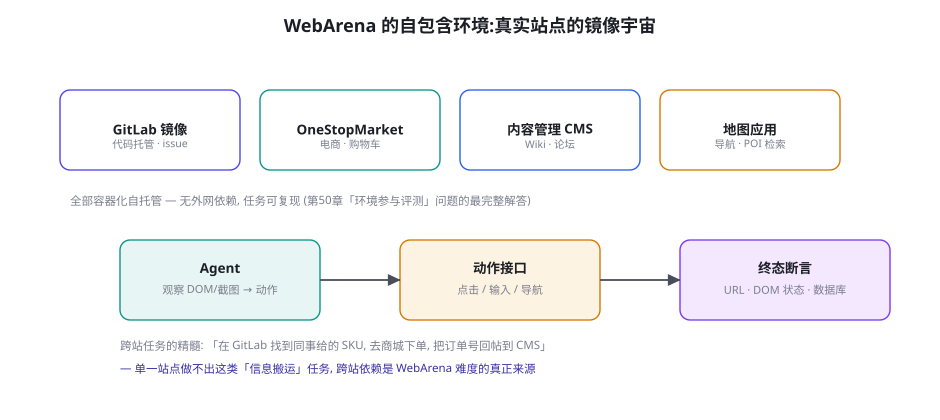
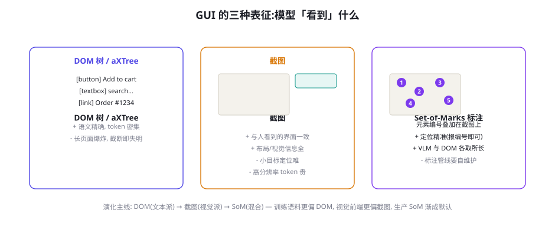
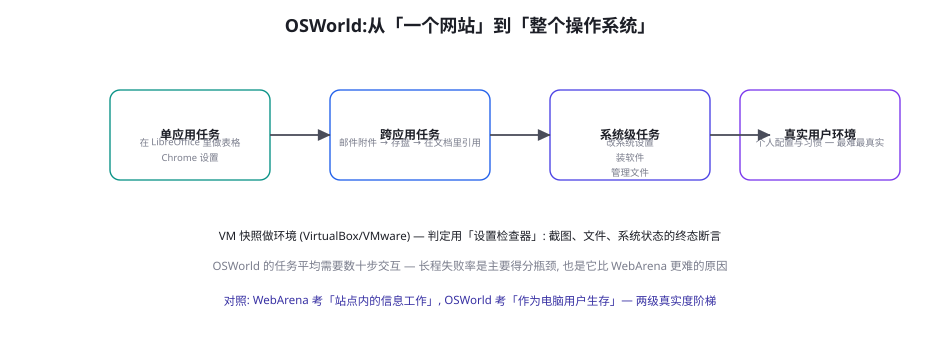

Web 与 Computer-Use 基准：WebArena、OSWorld、Mind2Web
GUI Agent（第 67 章的「被评测方」）的评测是 Agent 评测里环境工程最重的一支：要自托管真实站点、要处理动态渲染、要在截图与 DOM 之间选表征、要为整个操作系统造快照。本章解剖 WebArena 的自包含环境设计、OSWorld 的系统级任务分层、Mind2Web 的「离线轨迹」路线，以及 GUI 表征（DOM vs 截图 vs Set-of-Marks）这个评测与应用共享的技术分歧——它是「环境换真实度」这笔交易的完整账本。
WebArena：自包含的镜像宇宙

WebArena（Zhou et al. 2023, arXiv:2307.13854）回答的问题是：「在真实网站上评测 Agent」有三个致命伤——外站会变（任务复现不了）、外站有真实副作用（不能让 Agent 真下单）、外站不可控（A/B 实验改版让你昨天的题目今天失效）。它的解法是「镜像宇宙」：把 GitLab、OneStopMarket（电商）、内容管理、地图四个开源站点容器化自托管，Agent 只在这个宇宙里活动——真实站点的功能完整保留（DOM 结构、交互逻辑与线上版一致），但世界是私有的、可重置的、可断言的。题目的判分用终态断言：任务结束时检查 URL、DOM 状态或镜像数据库的状态（「购物车里出现了 SKU X」「issue 被关闭且评论包含 Y」）——第 46 章奖励设计的三层判分在评测侧的原封复用。跨站任务是它对领域最大的设计贡献：「从 GitLab 的 issue 里找到同事给的 SKU，去商城下单，把订单号回帖到 CMS」——信息在站点间搬运，考察的不是「会用某个网站」，而是「把网站当工具完成目标」的元能力，这也是它与「RPA 脚本」的分界线。
| 基准 | 环境形态 | 表征 | 任务规模 | 判分方式 |
|---|---|---|---|---|
| Mind2Web (2023) | 离线轨迹（真实网站快照） | DOM + 截图 | 2,350 任务 | 动作序列匹配 |
| WebArena (2023) | 四站点容器镜像 | DOM/截图可选 | 812 任务 | 终态断言 |
| VisualWebArena (2024) | 同 WebArena | 强制截图 | 910 任务 | 终态断言 |
| OSWorld (2024) | 完整操作系统 VM | aXTree + 截图 | 369 任务 | 设置检查器（多模态断言） |
| AndroidWorld (2024) | Android 模拟器 | aXTree + 截图 | 116 任务 | 状态断言 |
表征之争：DOM、截图与 Set-of-Marks

表征选型不只是工程细节，它直接定义了「被评测的能力」：DOM 派（把可访问性树/清洗过的 HTML 给模型）测的是「文本推理 + 结构化导航」，对纯文本模型友好，但 token 消耗巨大（一个复杂页面轻松 10 万 token，长页面截断即失明）；截图派测的是「视觉 GUI 理解」，与人面对的界面一致（真实度最高），但小按钮的精确定位对 VLM 是硬骨头；Set-of-Marks 派（SoM，Yang et al. 2023, arXiv:2310.11441）在截图上叠加可交互元素的编号框，模型只需「说出编号」——定位难题被转化为编号识别，融合了 DOM 的语义与截图的视觉。生产选型的分流逻辑：评测想测「产品真实体验」就用截图系（VisualWebArena），想测「功能完成度上限」就用 DOM/SoM 系——评测的表征必须与应用的表征一致，否则测出来的能力与交付的能力错位（第 31 章「脚手架即能力」的表征版）。Mind2Web 的后续工作（WebCanvas、Online-Mind2Web）则示范了另一个方向：从「离线轨迹回放」走向「在线活站评测」——离线评测快而可控，但「网站是活的」这堂课只有在线评测能上。
「环境参与评测」还带来一个隐私维度的复杂化，值得单独成段：评测环境里的数据本身就是敏感资产。镜像宇宙的做法（自托管、假数据）已经隔离了大部分风险，但两类场景仍会泄漏：① 评测用真实数据回放——「影子监控」里回放生产流量到评测环境，流量里的 PII 就跟着进了评测系统（第 61 章的脱敏管线在评测侧同样硬性前置）；② VM 快照的「环境记忆」——为了逼真而预装了真实业务数据、真实账号的快照，本身就是一份高价值泄露面（快照文件被打包带走的后果等于数据库泄密）。纪律：评测环境的逼真度用「结构逼真」实现（同样的字段、同样的界面、同样的流程），数据层一律合成或脱敏——「逼真」与「真实数据」是两个可以分开购买的属性，只有结构逼真是评测需要的，真实数据买来的逼真是安全债务。
OSWorld：把评测搬进整个操作系统

OSWorld（Xie et al. 2024, arXiv:2404.07972）把环境从「一个网站」放大到「一台电脑」：完整 Ubuntu 虚拟机，任务涵盖 LibreOffice 办公、Chrome、系统设置、文件管理、乃至 GIMP/VLC 这类重客户端——Agent 要像真实用户一样生存。三个工程贡献值得记录：① VM 快照 = 可重置世界——每道题从统一快照启动，做完即弃，副作用归零（第 45 章训练环境的「reset 接口」在系统级的实现）；② 设置检查器（Setup Checker）——判分不靠裁判模型，而是任务定义时声明「终态检查器组合」：文件存在性/内容哈希、系统设置值、进程状态、截图区域比对——多模态断言的 DSL 化；③ 人类基线——每个任务给出人类完成时间（平均几十秒 vs Agent 数分钟），「人类效率比」成为比成功率更立体的指标。成绩单上值得记住的对比：人类 72% 平均 40 秒，最强 Agent 2024 年 ~12%、2025 年头部 ~60%——一年半的差距抹平过程，再次是「环境接口设计 + 推理模型 + 采样重试」的三重奏，与 SWE-bench 的三级跳同构。OSWorld 的深层价值：它是「Computer Use」品类的验收标准——第 76 章「机器操作数字世界的经济学」将以它的分数曲线为起点。
同期对比：SWE-bench Verified 从 4% 到 70% 用了约一年半，OSWorld 从 12% 到 60% 用了类似时间——看似同速，但 GUI 域的「绝对难度墙」更硬，原因有三。① 判定基建贵一个数量级——跑测试是毫秒级，起一个 VM 快照是分钟级，评测吞吐的量级差距直接限制采样-重试范式的规模（代码域「多路采样」的胜利在 GUI 域打折）。② 表征损失不可忽略——代码域的输入输出都是纯文本无损传输；GUI 域无论 DOM 还是截图都有信息丢失（动态内容、canvas 绘制、iframe 嵌套都是表征黑洞）。③ 动作的「不可逆成本」——GUI 里点错按钮可能进入无法回退的状态（删除、下单、发送），探索式试错的代价高于代码域（git 可回滚），模型必须「更谨慎」——而谨慎与探索效率是张力关系。三个原因合起来解释了 GUI Agent 的产品策略：真实部署一定带「护栏层」（确认弹窗、白名单、回滚快照，第 60 章），纯自主运行是评测里的乌托邦。
终态断言在 GUI 域的实现值得给一个代码级示例，因为它是自建 Web 评测的核心部件——「设置检查器」的微缩版：
def check(task) -> bool:
"""WebArena 式终态断言: 三种检查器按任务组合。"""
checks = []
# ① URL 断言: 导航结果 (最弱, 只证「去了」不证「做了」)
if task.expect_url:
checks.append(current_url() matches task.expect_url)
# ② DOM 状态断言: 页面语义 (中等强度)
if task.expect_dom:
dom = stable_dom(wait_until_unchanged=800) # 稳定等待
checks.append(task.expect_dom in dom)
# ③ 数据库断言: 镜像库终态 (最强, 防表面功夫)
if task.expect_db:
row = db.query(task.expect_db.sql)
checks.append(row and row[task.expect_db.field] == task.expect_db.value)
# ④ 截图区域断言: 视觉状态 (用于无 DOM 的桌面应用)
if task.expect_visual:
region = screenshot_region(task.expect_visual.box)
checks.append(visual_match(region, task.expect_visual.ref, tol=0.9))
return all(checks) # 全部通过才算 resolved — 与双闸同哲学四种检查器按强度递增、按实现成本递增。组合的原则：至少一个「强断言」（数据库/文件）压阵——只有 URL + DOM 的任务会被「导航到位但不执行」的表演骗过（第 46 章「停在半路」的评测版）；截图断言最贵也最脆（视觉比对阈值难调），只用于无 DOM 可查的场景（桌面应用、canvas）。自建评测时给每道题登记「断言强度等级」，统计不同强度下的分数差——差额大说明你的模型（或被测系统）在做「表面功夫」，这本身就是重要的诊断信号。
Mind2Web 系：离线路线的价值与局限
Mind2Web（Deng et al. 2023, arXiv:2306.06070）的路线与 WebArena 相反：不在仿真环境里跑，而是从 137 个真实网站收集 2,350 个任务的人类操作轨迹（含 DOM 快照与动作序列），评测时回放页面状态、让模型预测下一步动作。它的两个独特价值：① 规模——离线收集的成本远低于建环境，任务覆盖 31 个域（比任何仿真环境都广），适合训练数据与「粗筛评测」；② 任务自然性——人类标注的真实意图（「订一张 7 月去东京的最便宜机票」）比人工编写的任务描述更贴近真实分布。局限同样清楚：离线回放无法处理「动作改变世界」——点错一步后页面状态与录制轨迹分叉，后续动作全错——它本质上测「单步模仿」而非「长程闭环」。演化线由此清晰：Mind2Web 供给分布与训练（它的轨迹集是 WebArena 时代模型的重要养料），WebArena/OSWorld 供给验收——离线与在线不是竞争而是流水线的两级，第 47 章数据飞轮的「离线合成 → 在线验证」分工在评测域重演。
GUI 域评测的分数波动比代码域大得多，三个最常见的信度刺客：① 时间选导（timing flakiness）——异步加载、动画、懒渲染让同一动作有时早了有时晚了——同一题两次跑一红一绿。对策：断言前加「稳定等待」（元素不变 N 毫秒才算稳）+ 失败重跑一次的宽容规则（但要记录重跑率——重跑率高说明环境病了）。② 表征截断——DOM 太长被截断、截图视口只覆盖首屏——模型「没看见」不是「不会」。对策：把表征覆盖率（元素是否进入表征）作为前置检查，截断导致的失败单独归类。③ 环境版本漂移——容器镜像里的浏览器升级、站点依赖更新，三个月后的环境已不是三月前的环境。对策：镜像版本戳进每条分数记录（第 50 章 meta 段的纪律），镜像更新视为评测集变更走版本流程。三个刺客的共同本质：GUI 评测测的是「模型×环境×表征」的合取——任何一个变量的漂移都会被记在模型的账上，评测设计者的职责就是把账算清。
体验「表征如何决定成败」：找一个你业务里的常见页面（或任意复杂 Web 应用），分别用三种方式把它「喂」给同一个模型（如 GPT-4o/Qwen-VL）：① 清洗后的 DOM（保留语义标签与文本）、② 全页截图、③ 截图 + SoM 编号标注（手动画几个框写编号即可）。问它同一个任务（「找到订单 #1234 的详情页入口」），对比三种表征下的回答质量与 token 消耗。你会发现 DOM 在语义任务上稳赢但 token 贵 5~10 倍，截图便宜但对小目标弱，SoM 的性价比常常最高——这个十分钟实验给你的选型直觉，胜过读十篇评测论文。
还有一个评测设计者视角的洞察值得记录：GUI 基准的「难度设计学」有自己的独门手艺。代码域的难题靠「逻辑深度」（多步依赖、隐藏状态），GUI 域的难题靠四种「环境手艺」：① 干扰项——页面上放多个相似的入口（两个「删除」按钮，一个是对的），考视觉分辨与语义理解；② 路径依赖——正确的路径必须经过一个反直觉的中转（先「保存草稿」才能「分享」），考流程知识而非界面识别；③ 动态噪声——加载慢、重定向、需等待的确认框，考「节奏感」（动作时序）；④ 部分可逆——某些动作可撤销某些不可（草稿可删、订单不可），考风险感知。四种手艺的难度设计与第 44 章「评测陷阱题」的设计同源，但 GUI 域把它们做进了「环境」而不是「题目文本」——环境即题目是这个域最独特的命题，也是它比其他域更依赖「环境工程师」这个角色的原因（一个会设计「好陷阱」的环境工程师，价值不亚于一个会出题的领域专家）。
三个信度刺客的「监控化」值得展开成一段实操：它们不该是被动的「事故后归因」，而应是评测系统的常驻仪表。① 重跑率仪表——宽容重跑规则下的重跑比例是环境健康度的直接指标（<5% 健康，>15% 环境病了，先修环境再谈分数）；② 表征覆盖率仪表——每题记录「关键元素是否进入表征」（DOM 断言的元素在 aXTree 里出现过吗、目标按钮在截图视口内吗），覆盖率低的题目单独统计——「失明型失败」与「能力型失败」混在一起是 GUI 评测最大的噪声源；③ 断言强度仪表——上文登记的断言强度等级，监控「强断言题的分数 − 弱断言题的分数」差值随时间的变化（差值扩大 = 表演倾向增强）。三块仪表的实现都是评测日志的聚合（第 50 章归档纪律的 GUI 域兑现），不产生新的采集成本——评测系统的仪表盘，是把「信度刺客」从暗处拉到明处的唯一手段。
把「表征之争」延伸到成本维度，补一个工程团队最需要的数据感：三种表征在真实任务里的 token 账本差异极大。以一个中等复杂度的电商页面为例（~200 个可交互元素）：清洗 DOM 约 8k~15k token（视清洗策略），全页截图（高分辨率）约 1.5k~3k token（VLM 的视觉 token 化），SoM 标注截图约 2k~3.5k token（截图 + 编号列表）。单看一次便宜，但乘上 Agent 的交互轮数（一次任务 10~30 轮，每轮都要重新观察）与多路采样（第 51 章的采样范式），差距放大两个数量级——GUI Agent 的单任务成本通常是代码 Agent 的 3~10 倍，表征选型是第一大杠杆。省 token 的三个进阶手法：视口滚动策略（只截当前视口 + 摘要历史视口，而非全页长图）、增量表征（页面状态没变就不重复发表征，只发模型自己的动作回执）、DOM 剪枝（aXTree 只保留可交互元素与语义锚点，装饰性 DOM 全剪——WebArena 的清洗器就是这么做的）。三个手法叠加通常能省 50~70% 的表征 token——第 76 章成本经济学里会再算总账，这里先记住：GUI Agent 的优化，一半在模型，一半在「喂给模型什么」。
再补一个「评测环境与训练环境复用」的工程账：本章的镜像宇宙、VM 快照、设置检查器，与第 45 章训练环境五组件是同一套基建的两种用途——只读副本 + 模拟写层服务训练采样，快照重置 + 断言 DSL 服务评测验收，同一套镜像、同一套 Dockerfile、同一套断言代码。建设的正确次序是「评测先行」：先建评测环境（验收标准要先于训练存在，否则训练无靶），训练环境在其上加采样调度与轨迹记录。一次基建投入、两处复用的账本在第 45 章算过一遍——GUI 域因为环境工程更重，复用的回报更高（环境成本占项目总成本的 40%+ 时，复用不是优化项而是立项前提）。把「评测环境 = 训练环境的验收面」写进团队的基建规划，是本章最值钱的一句工程建议。
三个高频疑问
Q：我的产品是「在线上真实站点跑」的，WebArena 这种仿真评测对它有参考价值吗？有，但要分清「验收什么」：仿真评测验收「能力」（能不能完成这类任务），真实灰度验收「集成」（在你的站点、你的账号体系、你的反爬/风控下能不能）——两者失败的原因集几乎不重叠（仿真的失败是能力问题，真实的失败多是工程问题：登录态、验证码、风控误伤）。推荐的分级：仿真基准（WebArena 类）测能力上限 → 私有镜像（自站点的容器副本，学 WebArena 的镜像思路）测集成行为 → 只读灰度（真实站点、只读操作白名单）测真实环境。第 60 章的权限分级会与这个分级严丝合缝——评测的分级就是权限的分级，设计时一起想。
Q：OSWorld 这类「整机评测」离我的桌面自动化产品有多远？比想象中近，且方向相反地「值得盯紧」：OSWorld 的分数曲线是整个 Computer-Use 品类的「能力水位线」——它每涨 10 个百分点，你的桌面自动化产品可覆盖的任务边界就外扩一圈（新场景从「必须硬编码」变成「模型直接搞定」）。产品团队的正确姿势：把 OSWorld 的任务按你的产品域分类（哪些是「竞品能力」、哪些是「你的场景」、哪些「永远不该让模型做」），每季度在「你的场景」子集上跑一遍最新模型——这是最低成本的「能力水位监测」。同时注意它的反向信号：OSWorld 上「人类 40 秒、模型 5 分钟」的任务清单，就是你产品里「不该上模型、继续用规则引擎」的清单（第 76 章成本账本的反向用法）。
Q：这些基准的任务会不会太「理想化」，真实网页的脏（弹窗、Cookie 横幅、A/B 变体）都没覆盖？对，而且这是全谱系的最大短板——镜像宇宙干净得像实验室，真实 web 的「脏」是能力的一部分（人处理 Cookie 横幅毫不费力，模型常被卡住）。正在出现的补位方案：脏化增广（在镜像站点里注入弹窗、横幅、倒计时等「真实噪声」——第 44 章参数脏化增广的环境版）、真实流量评测（第 50 章「影子监控」在 GUI 域的实现：生产环境的只读回放）、以及 Online-Mind2Web 类的活站抽测（定期在真实网站上跑固定任务集，容忍低频但锚定真实）。自建评测时建议的配比：镜像域 70%（可复现、可归因）+ 脏化增广 20% + 真实抽测 10%——把「脏」当成一级考纲而不是意外。
本章在全书网络中的连接：上游是第 50 章（评测方法论——本章是「环境工程最重」象限的展开）、第 46 章（终态断言与奖励设计同构）；横向与第 51 章（SWE-bench——判定基建对比的最佳参照）并列；下游通向第 67 章（GUI Agent——被评测方的技术栈）、第 60 章（权限与沙箱——评测分级即权限分级）、第 73 章（Computer Use 前沿——OSWorld 分数曲线的应用视角）。复习锚点：一张镜像宇宙图（52-1）、三种表征图（52-2）、任务层级图（52-3）、谱系表（52-1 表）、三个信度刺客。
关于「手机与桌面」的表征差异再补一段，因为它常被桌面思维误导。AndroidWorld 类移动评测与桌面 OSWorld 有两个本质不同：① 交互粒度更粗——手机没有悬停、右键、拖选，动作空间小但「每一步的语义权重更大」（一次点击即一次页面跳转，没有「先看看再说」的中间态）；② 系统弹层是不可控变量——权限请求框、系统更新提示、通知横幅随时插入，模型的「弹层处理」能力成了隐性考点（真实用户每天处理十次，评测环境里却常被关掉——评测环境的「干净」又一次偏离了真实）。自建移动评测时建议主动「打开弹层」：把权限弹窗当作考纲的一部分（模型该拒绝的、该允许的、该引导用户决定的——第 60 章权限设计的移动版），环境越接近真实，评测越有产品价值——这与前文「脏化增广」是同一个原则在移动域的落地。
本章收尾，把 Web/Computer-Use 域放回「评测篇」的坐标系：如果说 SWE-bench 证明了「判定基建决定评测信度」，本章证明了「环境基建决定评测真实度」——两个基建合起来，就是第 56 章自建评测的全部工程骨架。下一章的 GAIA/τ-bench/BrowseComp 把镜头从「环境」拉回「任务设计」：不靠重环境，靠任务的认知结构本身区分好坏模型——那是「轻环境、重任务」路线的代表作，与本章的重环境路线构成评测设计的两极，你的自建评测将在两极之间选点。
最后一个组织视角的补充：GUI 域评测团队的角色配比与代码域显著不同——代码域「出题人」（懂仓库的工程师）是核心角色，GUI 域则是「环境工程师」（懂容器、懂断言 DSL、会设计陷阱）与「任务设计师」（懂业务流程、懂人机交互）的双核。招不到现成的「环境工程师」是常见卡点，内部转岗的优先画像：有自动化测试（Selenium/Playwright）经验 + 有 CI 维护经验的 QA 工程师——他们已有的技能树（选择器、等待策略、断言）与本章的评测基建几乎完全重叠，缺的只是「把测试思维换成 Agent 评测思维」——从「测固定流程」到「测开放式任务」。这个转岗通道值得写进团队的人才规划：Agent 评测的岗位需求在爆发，而最对口的人才池恰恰是 QA——他们比任何人都清楚「环境的脏」与「断言的脆」。
本章小结
- WebArena 的镜像宇宙解「真实站点的三宗罪」（会变/有副作用/不可控），跨站信息搬运是难度的真正来源。
- 表征三派：DOM（语义精确、token 贵）、截图（真实、小目标难）、SoM（混合、性价比高）——评测表征必须与应用表征一致。
- OSWorld 把环境放大到整机：VM 快照可重置、设置检查器多模态断言、人类基线做效率参照。
- GUI 域爬升慢的三个结构性原因：判定基建贵一个量级、表征损失、动作不可逆。
- Mind2Web 与 WebArena 是流水线两级：离线供分布与训练，在线供验收——不是竞争。
- 三个信度刺客（时间选导/表征截断/环境漂移）的本质：GUI 分数是「模型×环境×表征」的合取。
自测题
- 为你的业务设计一个「跨站搬运任务」：信息从哪流到哪、终态断言查什么、为什么单站做不出这道题？
- 你的产品用截图表征，但评测用 DOM——设计一个实验量化这个错位的代价（提示：同一任务两种表征跑对照）。
- 给「时间选导」写一个通用断言策略：稳定等待的参数怎么定？重跑规则怎么设计才不会掩盖真实问题？
- OSWorld 的「人类效率比」指标，对你的产品意味着什么新 KPI？（提示：不只是成功率）
参考文献与延伸阅读
- Zhou, S. et al. (2023). WebArena: A Realistic Web Environment for Building Autonomous Agents. arXiv:2307.13854
- Xie, T. et al. (2024). OSWorld: Benchmarking Multimodal Agents for Open-Ended Tasks in Real Computer Environments. arXiv:2404.07972
- Deng, X. et al. (2023). Mind2Web: Towards a Generalist Agent for the Web. arXiv:2306.06070
- Yang, Z. et al. (2023). Set-of-Mark Prompting Unleashes Extraordinary Visual Grounding in GPT-4V. arXiv:2310.11441
- Koh, J. et al. (2024). VisualWebArena: Evaluating Multimodal Agents on Realistic Visual Web Tasks. arXiv:2401.13649
- Rawles, C. et al. (2024). AndroidWorld: A Dynamic Benchmarking Environment for Autonomous Agents. arXiv:2405.14573